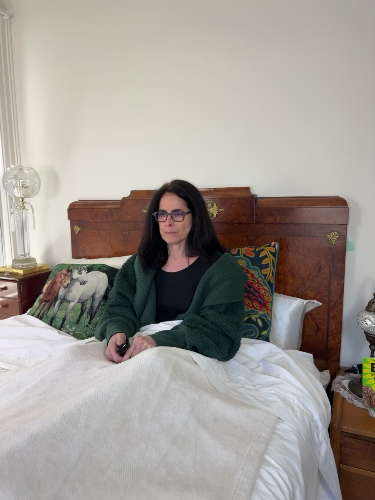
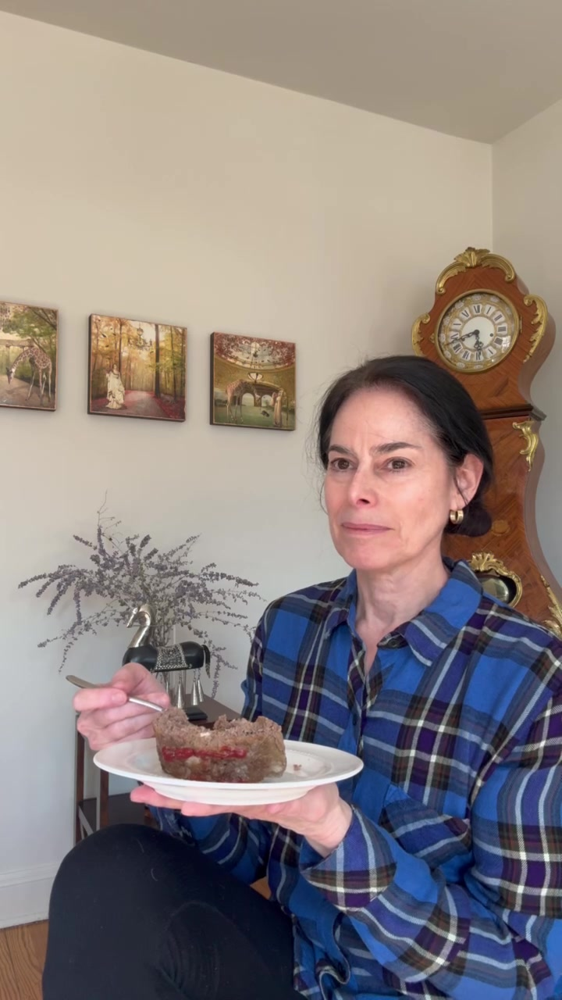
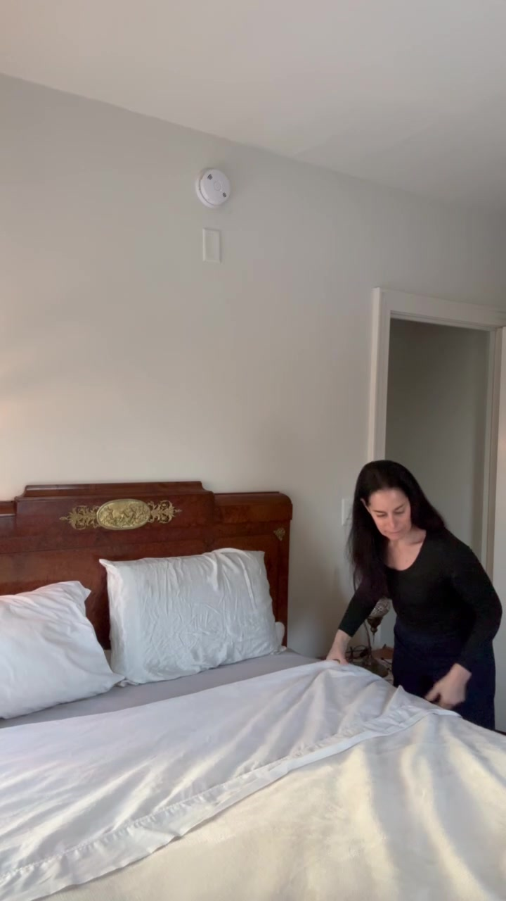

You're 44 and suddenly wide awake at 3am.
I hear this from women every week.
And it's rarely just “bad sleep.” Here are 3 things that are often behind it.
Progesterone is dropping.
What it doesProgesterone has a calming effect. As it falls in perimenopause, sleep often gets lighter and easier to break.

Your blood sugar dips overnight.
What it doesA light, late or carb-heavy dinner can lead to a dip that triggers a stress-hormone wake-up.
Your cortisol rhythm is off.
Wired at night, flat in the morning. Late screens, late caffeine and stress all play a part.

Small changes to start with:
✓ Protein and fibre at dinner
✓ Caffeine before noon
✓ Dim the lights an hour before bed
✓ The same wake time every day
That's what my Hormone Assessment is for.
We look at your sleep, cycle, meals and stress together, so you know what's waking you and where to start.